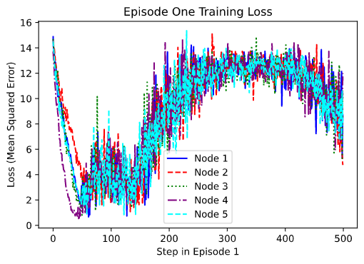

As part of the Wireless Sensor Networks Laboratory (WiSe-Net Lab), I am working to develop artificially intelligent agents that can control the traffic in a wireless sensor network. Issues regarding packet forwarding, battery management, and coordination of the nodes makes it a challenging problem.
Specifically, we are focusing on a star network configuration, and adding layers of complexity as we progress. Specifically, we model the nodes' decision of whether to transmit data as a Marcov Decision Process. However, none of the nodes can observe the network state, only their own state, and what they overhear through the wireless radio. This means that this is a multi-agent, partially observable Marcov Decision Process, one of the biggest challenges in Reinforcement Learning (RL).
In order to address this challenge, we are using a distributed Deep Q Network (DQN) for routing the packets. We have been able to demonstrate Q-learning, the most basic type of RL, for small amounts of network traffic. However, as the network traffic increases, the state space becomes too large to continue with that approach. Instead, we model the nodes individually and train a separate DQN for each node.
So far, we are able to model convergence, but the solutions that the agents obtain are not yet optimal. That is, the nodes are able to coordinate their transmissions, but not in an optimal way. One common problem is single nodes dominating the conversation, while the other nodes remain silent. We are adjusting the reward structure to aleviate this, but this work is still ongoing.
Our current approah uses multiple DQN to address the challenge, but there are a number of other approaches we are working on, including using an Asynchronous Advantage Actor-Critic (A3C) (or some other policy based method, like PPO/TRPO) trained from the whole network state, and then using a Inverse Reinforcement Learning approach to train to nodes to follow the optimal solution at scale.
This work is ongoing, and we hope to publish by the end of the year.